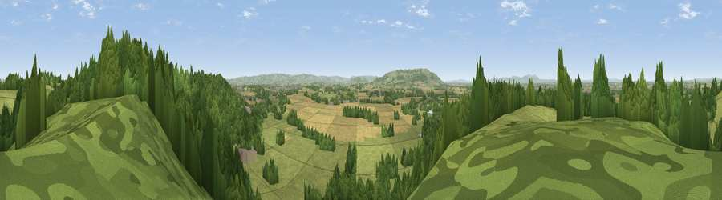

Viewpoint near Fladbury
#12943 in England · top 32% of its area beats it · near FladburyThe view, rendered

A 360° render of this exact spot computed from the terrain model, tree cover and land cover — summer colours, afternoon light, calibrated against photographs of famous viewpoints. Real trees, hedges and buildings will differ in detail.
The panorama
Grey silhouette: terrain skyline in each direction (720 bearings, Earth curvature and refraction included). Dashed green: skyline with trees (+15 m) and buildings (+8 m) as obstacles. Blue strip: how far the ground is visible on each bearing.
Where the view opens
Wedge length = distance to the farthest visible ground on that bearing (vegetation-aware). Rings at 10, 25 and 50 km.
What fills the view
48% grassland · 36% woodland · 14% cropland · 1% built-up
Angular shares of the visible panorama (visual magnitude), not map area. Landscape diversity 0.46 (0–1 Shannon).
Key numbers
More beautiful places nearby
The staircase of upgrades: each row has a higher view potential than everything closer. Driving times are estimates from straight-line distance, calibrated against real road routing — check an actual route before setting out.
| Place | Direction | Drive | Score |
|---|---|---|---|
| Viewpoint near Lenchwick | E · 1 km | ~3 min | 66.0 |
| Viewpoint near Elmley Castle | SSW · 7 km | ~15 min | 76.9 |
| Viewpoint near Elmley Castle | SSW · 9 km | ~17 min | 79.5 |
| Viewpoint near Elmley Castle | SSW · 9 km | ~18 min | 80.5 |
| Bredon Hill | SSW · 9 km | ~18 min | 83.0 |
| North Hill | W · 24 km | ~39 min | 86.8 |
| Worcestershire Beacon | W · 24 km | ~39 min | 87.1 |
| Viewpoint near West Quantoxhead | SW · 137 km | ~161 min | 87.9 |
52.12873, -1.99229 · source: screening · position refined by local search. Computed location — check access rights before visiting.